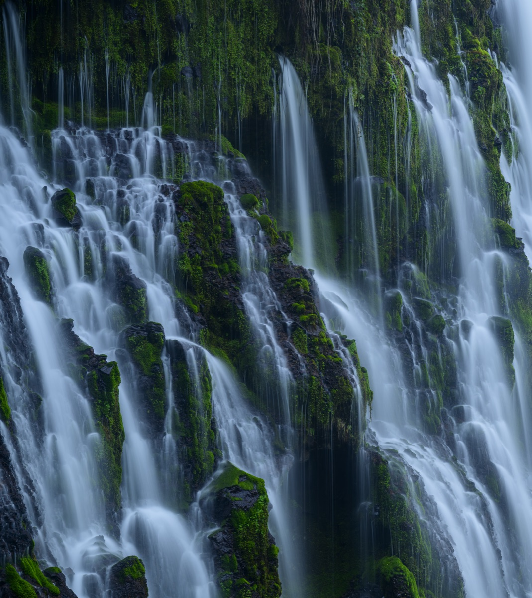
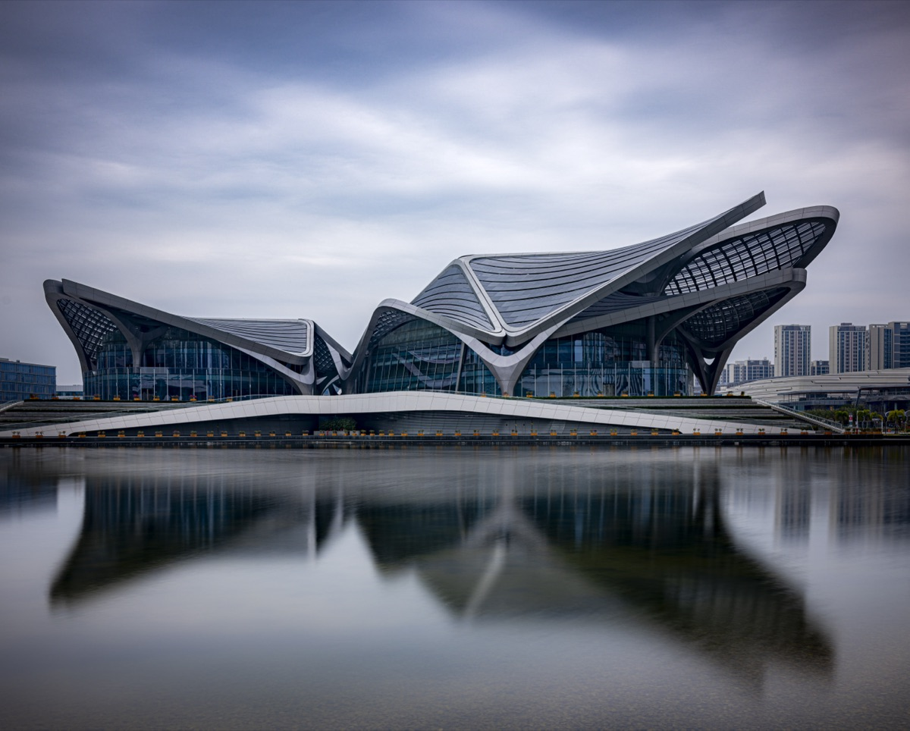

A self-hosted AI companion that gets bored, explores the web, chats with you, and dreams at night.
Human-in-the-loop text triage with reproducible training, tiered routing, and continuous feedback.


The places I've called home